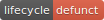

| lifecycle {rlang} | R Documentation |
The rlang package is currently maturing. Unless otherwise stated, this applies to all its exported functions. Maturing functions are susceptible to API changes. Only use these in packages if you're prepared to make changes as the package evolves. See sections below for a list of functions marked as stable.
The documentation pages of retired functions contain life cycle sections that explain the reasons for their retirements.


These functions are not yet part of the rlang API. Expect breaking changes.
pkg_env(), pkg_env_name(), ns_env(), ns_imports_env(), ns_env_name()
is_definition(), new_definition(), is_formulaish(),
dots_definitions()
local_options(), with_options(), push_options(),
peek_options(), peek_option()

In the questioning stage as of rlang 0.4.0
These functions are likely to be moved to the vctrs package:
new_logical(), new_integer(), etc.
na_lgl, na_int, is_lgl_na(), is_int_na(), etc.
In the questioning stage as of rlang 0.3.0
with_restarts(), rst_list(), rst_exists(), rst_jump(),
rst_maybe_jump(), rst_abort(). It is not clear yet whether we
want to recommend restarts as a style of programming in R.
return_from() and return_to().
expr_label(), expr_name(), and expr_text().
In the questioning stage as of rlang 0.2.0

Soft-deprecated in rlang 0.4.0
exiting(): Handlers are now treated as exiting by default.
as_logical(), as_integer(), etc. => vctrs::vec_cast().
type_of(), switch_type(), coerce_type(), switch_class(),
coerce_class()

Bumped to deprecated in rlang 0.4.0
new_logical_along(), new_integer_along(),
new_double_along(), new_complex_along(),
new_character_along(), new_raw_along(), new_list_along().
is_unary_lang() => Use the n argument of is_call()
is_binary_lang() => Use the n argument of is_call()
call_modify(): .standardise and .env arguments.
quo_expr() => quo_squash()
Assigning non-quosure objects to quosure lists.
as.character() on quosures.
cnd_signal(): .cnd => cnd
cnd_signal(): The .mufflable argument no longer has any effect
scoped_names() => base::search()
is_scoped() => is_attached()
scoped_env() => search_env()
scoped_envs() => search_envs()
env_bind_exprs() => env_bind_lazy()
env_bind_fns() => env_bind_active()
Passing a function or formula to env_depth(),
env_poke_parent(), env_parent<-, env_tail(), set_env(),
env_clone(), env_inherits(), env_bind(),
local_bindings(), with_bindings(), env_poke(),
env_has(), env_get(), env_names(), env_bind_exprs() and
env_bind_fns(). This internal genericity was causing confusion
(see issue #427). You should now extract the environment
separately before calling these functions.
get_env(): The env argument no longer has a default and must be supplied
is_frame(), global_frame(), current_frame(),
ctxt_frame(), call_frame(), frame_position(),
caller_frame()
ctxt_depth(), call_depth(), ctxt_stack(), call_stack(),
stack_trim()
The width and printer arguments of exprs_auto_name() and
quos_auto_name() no longer have any effect. For the same
reason, passing a width as .named argument of dots collectors
like quos() is deprecated.
as_overscope() => as_data_mask()
new_overscope() => new_data_mask()
overscope_eval_next() => eval_tidy()
overscope_clean()

Defunct as of rlang 0.4.0
length() and names() on tidy eval .data pronouns.
Supplying a named !!! call.
as_data_mask(): parent argument
new_data_mask(): parent argument
env_tail(): sentinel => last
abort(), warn(), inform(), cnd(), error_cnd(),
warning_cnd(), message_cnd(): call argument.
is_character(), is_string(), and variants: The encoding
argument.

These functions were entirely removed from the package. You will find them in the commit history and previous releases.
Archived as of rlang 0.4.0
UQE()
as_dictionary(), is_dictionary()
as_quosureish(), is_quosureish()
eval_tidy_()
mut_utf8_locale(), mut_latin1_locale(), mut_mbcs_locale()
set_chr_encoding(), chr_encoding(), set_str_encoding(), str_encoding()
as_native_character(), as_utf8_string(), as_native_string()
lang_type_of(), switch_lang(), coerce_lang()
Archived as of rlang 0.3.0:
cnd_inform(), cnd_warn() and cnd_abort()
new_cnd() => cnd()
cnd_message() => message_cnd()
cnd_warning() => warning_cnd()
cnd_error() => error_cnd()
rst_muffle() => cnd_muffle()
inplace() => calling(). The muffle argument of inplace()
has not been implemented in calling() and is now defunct.
cnd_signal(): .msg and .call.
cnd(), error_cnd(), warning_cnd() and message_cnd():
.msg => message.